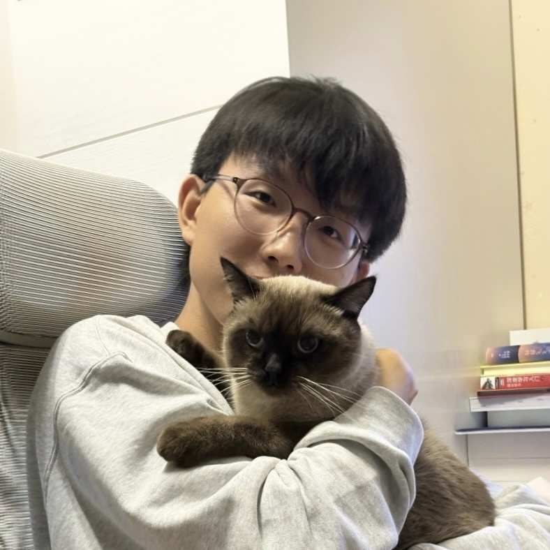
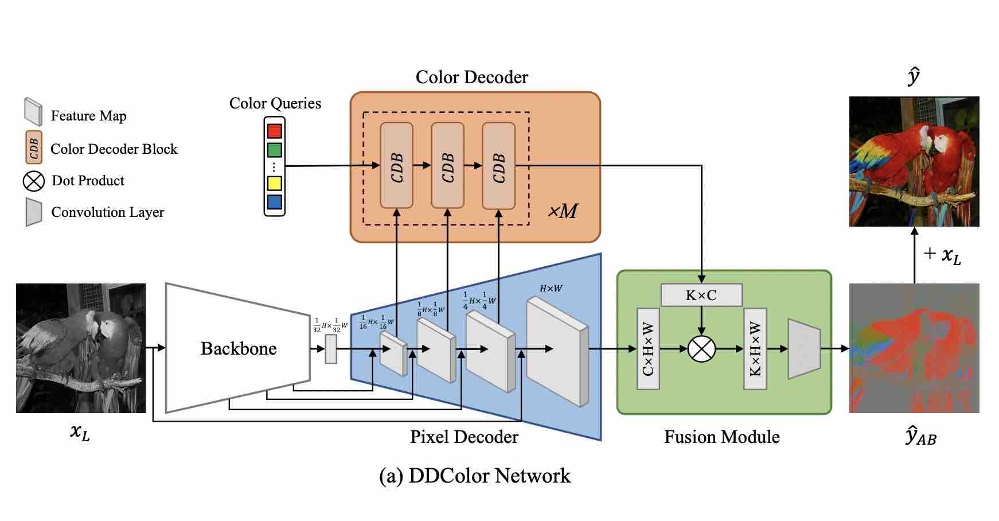
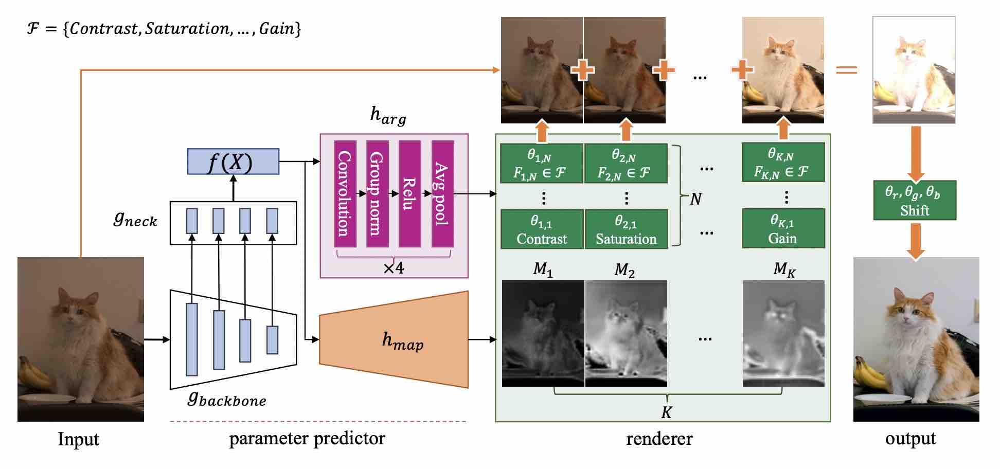
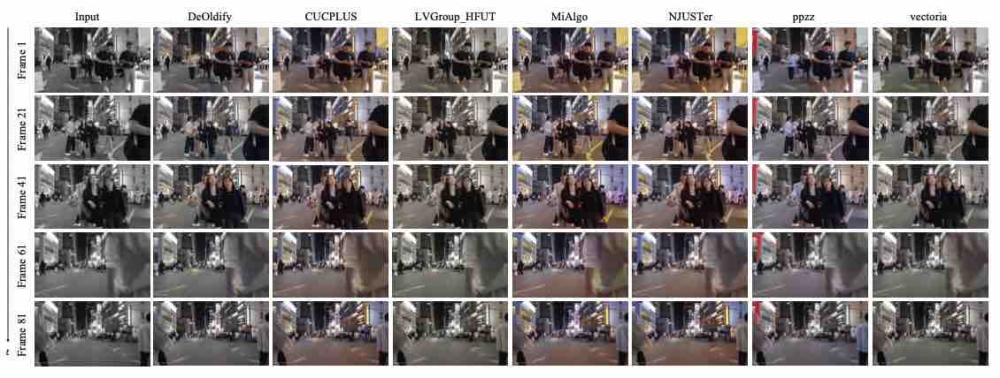

|
Xiaoyang Kang
I am currently a research engineer at Damo Academy, Alibaba Group, where I work on video
enhancement and generation. Before that, I obtained my M.S. and B.S. degrees in computer science and
technology from Beijing University of Posts and Telecommunications (BUPT).
My research interests are in computer vision and deep learning. I'm particularly interested in the
areas of generative model, image and video analysis and enhancement.
Email /
Github
|
|

|
Publications
| 
|
DDColor: Towards Photo-Realistic Image Colorization via Dual Decoders
Xiaoyang Kang , Tao Yang, Wenqi Ouyang, Peiran Ren, Lingzhi Li, Xuansong Xie
ICCV , 2023
paper /
code
|
| 
|
RSFNet: A White-Box Image Retouching Approach using Region-Specific Color Filters
Wenqi Ouyang, Yi Dong, Xiaoyang Kang, Peiran Ren, Xin Xu, Xuansong Xie
ICCV , 2023
paper /
code
|
| 
|
NTIRE 2023 Video Colorization Challenge
Xiaoyang Kang, Xianhui Lin, Kai Zhang, Zheng Hui, Wangmeng Xiang, Jun-Yan He,
Xiaoming Li, Peiran Ren, Xuansong Xie, Radu Timofte
CVPRW , 2023
project /
paper
|
Experience
- 2022.7 - present: Research engineer in Damo Academy, Alibaba Group,
Beijing.
- 2021.6 - 2022.6: Algorithm Intern in Alibaba Cloud, Alibaba Group,
Beijing.
- 2021.3 - 2021.6: Algorithm Intern in Tiktok, ByteDance, Beijing.
- 2020.7 - 2020.10: Research Intern in SenseTime AI Lab, Beijing.
|
Awards and Honors
- 2021 Kaggle Cassava Leaf Disease Classification, Top 1.3% (Silver Medal)
- 2019 Outstanding Graduates of Beijing, China
- 2019 Innovation and Entrepreneurship Competition of BUPT, First Prize
- 2017 Merit Student Awards
|
Thanks to Jon
Barron for sharing the code of his personal webpage.
|
|